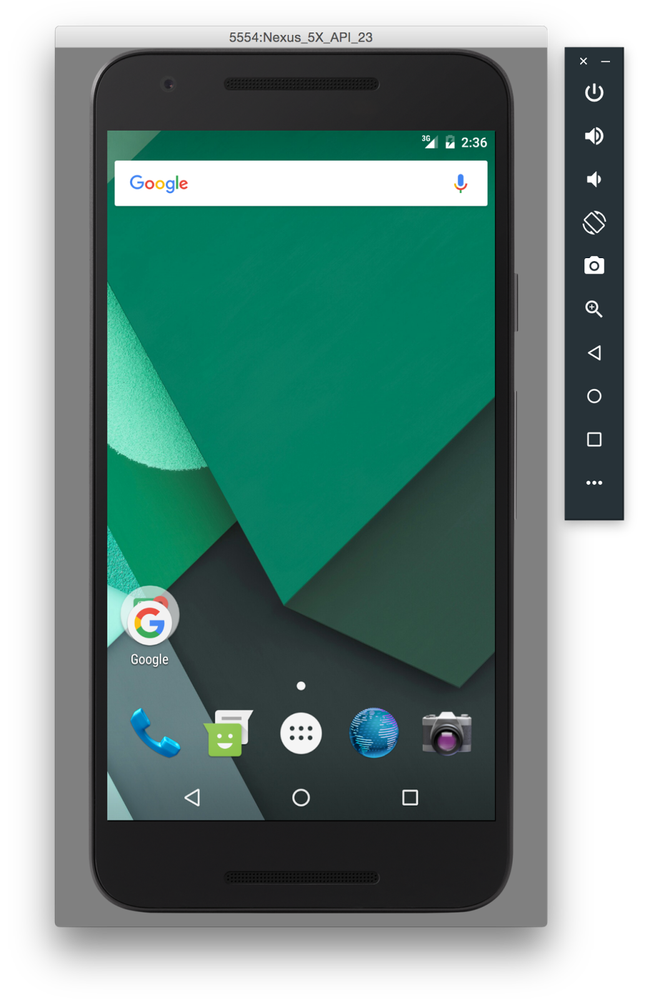

Telerik UI for Xamarin


| Date | Time | Course |
| February 28, 2018 | 9am - 1pm EST | Kendo UI & Angular |
| March 7, 2018 | 9am - 1pm EST | Telerik UI for ASP.NET MVC and ASP.NET Core |
| March 8, 2018 | 9am - 1pm EST | Kendo UI & React |
| March 14, 2018 | 9am - 1pm EST | Kendo UI & jQuery |
| March 22, 2018 | 9am - 1pm EST | Kendo UI & Vue |
| March 27, 2018 | 9am - 1pm EST | Telerik UI for Xamarin |
| March 30, 2018 | 9am - 1pm EST | Telerik UI for WPF |
| April 5, 2018 | 9am - 1pm EST | Telerik Reporting & Telerik Report Server |
| April 10, 2018 | 9am - 1pm EST | Telerik UI for WinForms |
| April 12, 2018 | 9am - 1pm EST | Telerik UI for ASP.NET AJAX |
| April 13, 2018 | 9am - 1pm EST | Telerik UI for UWP |

 |
yavor@newventuresoftware.com |
 |
www.newventuresoftware.com/blog |
 |
github.com/yavor87 |
Visual Studio Emulator for Android
Android Studio



 No binary output
No binary output
 Single class library for all platforms
Single class library for all platforms
<ContentPage xmlns="http://xamarin.com/schemas/2014/forms"
xmlns:x="http://schemas.microsoft.com/winfx/2009/xaml"
xmlns:local="clr-namespace:XamlSamples"
x:Class="XamlSamples.MainPage">
<Label Text="Welcome to Xamarin Forms!"
VerticalOptions="Center"
HorizontalOptions="Center" />
</ContentPage><ContentPage xmlns="http://xamarin.com/schemas/2014/forms"
xmlns:x="http://schemas.microsoft.com/winfx/2009/xaml"
xmlns:local="clr-namespace:XamlSamples"
x:Class="XamlSamples.MainPage">
<Label VerticalOptions="Center"
HorizontalOptions="Center">
<Label.Text>
Welcome to Xamarin Forms!
</Label.Text>
</Label>
</ContentPage>using Xamarin.Forms;
namespace XamlSamples
{
[XamlCompilation (XamlCompilationOptions.Compile)]
public partial class MainPage : ContentPage
{
public MainPage()
{
InitializeComponent();
}
}
}


| Label | Image | SearchBar |
| Entry | ProgressBar | ActivityIndicator |
| Button | Slider | OpenGLView |
| Editor | Stepper | WebView |
| DatePicker | Switch | ListView |
| BoxView | TimePicker | |
| Frame | Picker |

<Application ...>
<Application.Resources>
<ResourceDictionary>
<Color x:Key="PageBackgroundColor">Yellow</Color>
<Color x:Key="HeadingTextColor">Black</Color>
<Color x:Key="NormalTextColor">Blue</Color>
<Style x:Key="LabelPageHeadingStyle" TargetType="Label">
<Setter Property="FontAttributes" Value="Bold" />
<Setter Property="HorizontalOptions" Value="Center" />
<Setter Property="TextColor" Value="{StaticResource HeadingTextColor}" />
</Style>
</ResourceDictionary>
</Application.Resources>
</Application><StackLayout BackgroundColor="{StaticResource PageBackgroundColor}">
<Label Text="ResourceDictionary Demo" Style="{StaticResource LabelPageHeadingStyle}" />
</StackLayout>
BindableObject{x:Reference Name=slider}{x:Static local:NamedColor.All}{Binding FirstName}
public class PhoneDialerDroid : IDialer { }[assembly:Dependency(typeof(PhoneDialerDroid))]
IDialer dialer = DependencyService.Get<IDialer>();
if (dialer != null)
{
dialer.MakeCall(number); // use dialer
}
public async Task<List<TodoItem>> RefreshDataAsync ()
{
string restUrl = "http://developer.xamarin.com:8081/api/todoitems/";
var response = await client.GetAsync(restUrl);
if (response.IsSuccessStatusCode) {
var content = await response.Content.ReadAsStringAsync();
return JsonConvert.DeserializeObject<List<TodoItem>>(content);
}
}sqlite-net-pcl NuGet Packagepublic Task<List<TodoItem>> GetItemsAsync()
{
return database.Table<TodoItem>().ToListAsync();
}
public Task<List<TodoItem>> GetItemsNotDoneAsync()
{
return database.QueryAsync<TodoItem>("SELECT * FROM [TodoItem] WHERE [Done] = 0");
}
public Task<TodoItem> GetItemAsync(int id)
{
return database.Table<TodoItem>().Where(i => i.ID == id).FirstOrDefaultAsync();
}
public Task<int> SaveItemAsync(TodoItem item)
{
if (item.ID != 0)
{
return database.UpdateAsync(item);
}
else {
return database.InsertAsync(item);
}
}
public Task<int> DeleteItemAsync(TodoItem item)
{
return database.DeleteAsync(item);
}


|
yavor@newventuresoftware.com |
|
github.com/yavor87 |